Kama
Kama · Fukuoka
Kama
Highlighted on the Fukuoka map.
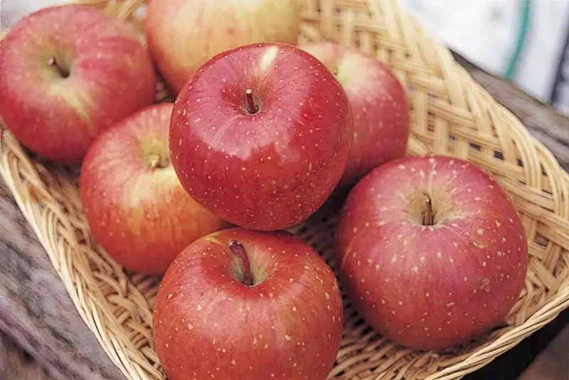
Dining
味よし食堂
Aji Yoshi Shokudo
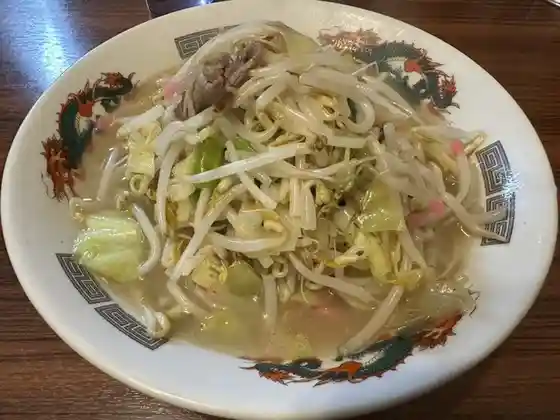
小次郎の里
Kojirou No Sato
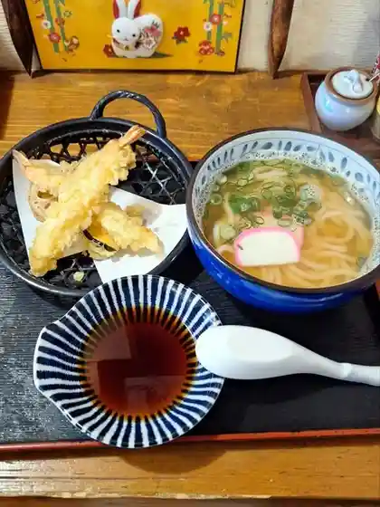
めん処小沼
Men Tokoro Konuma
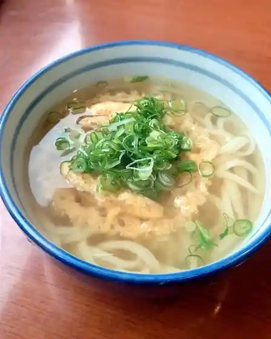
めんくいてい
Menkuitei
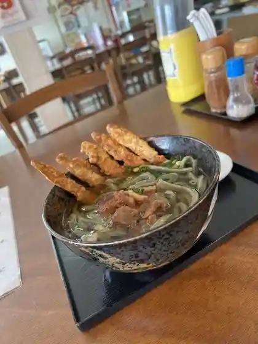
よもぎうどん
Yomogiudon
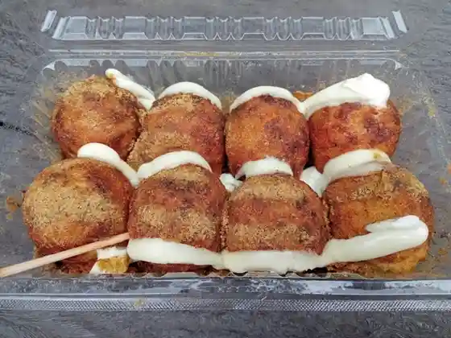
よし
Yoshi
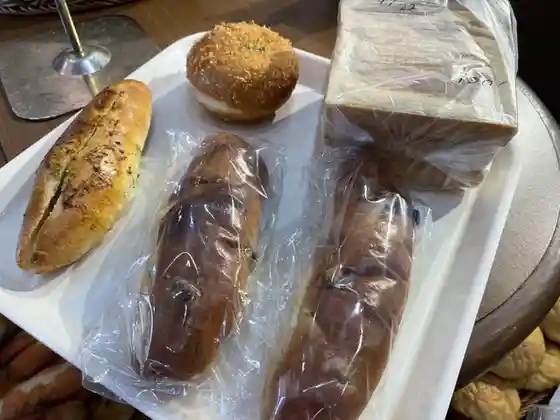
石釜パン工房 ル・ピエール
石釜パン工房 ル・ピエール
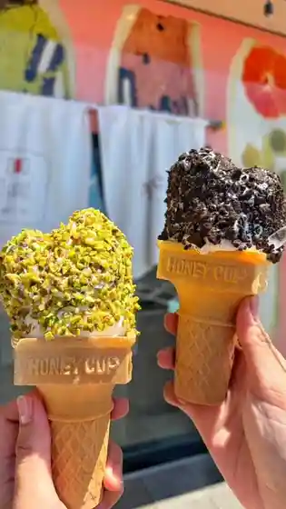
FRUIT SAND THREE
FRUIT SAND THREE
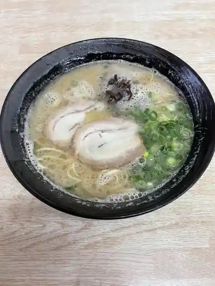
かほラーメン 本店
Kaho Raamen Honten
おおぐま食堂
Ooguma Shokudo
からあげ大将
Karaage Taishou
山田饅頭本舗
Yamada Manjuu Honpo
嘉麻うどん めん蔵
Kama Udon Men Kura
Ｔａｒｔｅ＆Ｓｗｅｅｔｓ Ｆ
Tarte&Sweets F
ポンポン亭 本店
Ponpon Tei Honten
Switch
Switch
サニーズ 嘉麻店
Saniizu Kama Mise
丸紅
Marubeni
森の駅 秀芳園
Mori No Eki Shuuhou Sono
常盤館
Tokiwa Kan
たこ一番
Tako Ichiban
道の駅 うすい 物産販売所
Michi No Eki Usui Bussan Hanbaijo
ロコホーム
Rokohoomu
なかみち
Nakamichi
麺や 紅鱗
Men Ya Kurenai Uroko
Age.3 KAMA
Age.3 KAMA
寒北斗酒造
Kan Hokuto Shuzou
すし勝
Sushi Kachi
韓国苑
Kankoku En
frame
frame
鯉の里 なかはら
Koi No Sato Nakahara
長州亭
Choushuu Tei
炭火焼鳥まさ
Sumibi Yakitori Masa
楽東園
Raku Higashi Sono
山田のたこ焼き屋さん 山たこ
Yamada Notako Yaki Ya San Yama Tako
ミュゼ・ド・モーツァルト 山田工場直営店
ミュゼ・ド・モーツァルト 山田工場直営店
まめや総本店 福岡
Mameya Souhonten Fukuoka
コリアンハウス洪苑 稲築店
Korianhausu Kou En Inatsuki Mise
博多屋
Hakata Ya
大里酒造 黒田武士
Oosato Shuzou Kuroda Bushi
ノンノ
Nonno
la-luna
la-luna
料亭 末廣
Ryoutei Suehiro
魚 玄蔵
Sakana Genzou
珈琲工房ぶれん堂
Koohii Koubou Buren Dou
ジャンボンヨーク
Janbonyooku
くんちゃんラーメン店
Kunchan Raamen Mise
自家焙煎 おだ珈琲
Jika Baisen Oda Koohii
魚・肉・酒 藤庵
魚・肉・酒 藤庵
気まぐれや
Kimagure Ya
大屋菓子店
Ooya Kashi Mise
はかたかりんとう
Hakatakarintou
まごころ食堂 タルヲシル
Magokoro Shokudo Taruwoshiru
さくらんぼ
Sakuranbo
スリーピーカフェ ニコ
Suriipiikafe Niko
茶寮 千年屋
Charyou Sennen Ya
嘉穂牛屋
Kaho Ushiya
横丁食堂別府
Yokochou Shokudo Beppu
らんぶる
Ranburu
大善
Dai Zen
朝日パン 工場直売店
Asahi Pan Koujou Chokubai Mise
ナリ食堂
Nari Shokudo
華香園
Kakou Sono
カドマルサンド
Kadomarusando
居酒屋 6期星
Izakaya 6 Ki Hoshi
My Girl
My Girl
うまみの郷
Umamino Sato
TIARA
TIARA
気ままな台所 遊季
Kimama Na Daidokoro Yuu Ki
嘉麻市梅林公園 売店
Kama Shi Umebayashi Kouen Baiten
本家たこ焼亭
Honke Tako Yaki Tei
ジョイフル 福岡稲築店
Joifuru Fukuoka Inatsuki Mise
くがや
Kugaya
白木牧場
Shiraki Bokujou
いっけん茅
Ikken Me
とっとちゃん
Tottochan
トンチャン横丁 赤崎牛
Tonchan Yokochou Akasaki Ushi
三浦
Miura
オランジュ
Oranju
割烹 荻原
Kappou Ogiwara
辛子明太子専門店 おおくぼ
Karashi Mentaiko Senmonten Ookubo
ほっともっと 稲築店
Hottomotto Inatsuki Mise
はんなり
Hannari
玉吉
Tamakichi
Cafe YUI
Cafe YUI
Alkemist
Alkemist
cafe rural
cafe rural
からあげ亭
Karaage Tei
haco kitchen
haco kitchen
権兵衛
Gonbee
嘉麻たこ
Kama Tako
サニースポットコーヒー
Saniisupottokoohii
焼きたてパン 笑笑
Yaki Tate Pan Shoushou
創作鉄板焼 ジパング
Sousaku Teppanyaki Jipangu
ハートゥラボ
Haatourabo
大隈チキン
Oosumi Chikin
めん六や 福岡嘉麻店
Men Roku Ya Fukuoka Kama Mise
五とく
Itsuto Ku
満月堂
Mangetsu Dou
平嶋ローズガーデンカフェ
Hirashima Roozugaadenkafe
ほっともっと 嘉麻上山田店
Hottomotto Kama Kamiyamada Mise
大塚精肉店
Ootsuka Seinikuten
レストハウス紫苑
Resutohausu Shion
お弁当のたまご亭 稲築店
O Bentou Notamago Tei Inatsuki Mise
食事処旅
Shokuji Tokoro Tabi
ゆずの樹
Yuzuno Ki
甚平
Jinpei
やきとり 一三六
Yakitori Kazumi Roku
まめや 嘉麻店
Mameya Kama Mise
居酒屋 かじもど
Izakaya Kajimodo
甘太郎
Kantarou
お好み焼き 鉄板焼 ゲンちゃん
O Konomi Yaki Teppanyaki Gen Chan
丸昌
Maru Masa
嘉麻山荘
Kama Sansou
PEG CAFE
PEG CAFE
PIZZAバルザーノ
PIZZA
やきとり 笑顔
Yakitori Egao
えみちゃん
Emichan
大隈ホルモンセンター
Oosumi Horumonsentaa
宴会と仕出し料理 鳴海
Enkai To Shidashi Ryouri Narumi
ビアガーデンそら
Biagaaden Sora
チーズ工房 Cacio
Cacio
つれづれ亭
Tsurezure Tei
しあわせ味噌カフェ ladybug
ladybug
みずちゃんち
Mizuchanchi
お弁当のふくたん
O Bentou Nofukutan
ランチBOX
Ranchi Box
paku paku
paku paku
神田うどん
Kanda Udon
酒処 みね
Sake Tokoro Mine
居酒屋 あそこ
Izakaya Asoko
遠藤ぶどう園
Endou Budou Sono
居酒屋さわ
Izakaya Sawa
勝ちゃん
Kachi Yan
ハコキチスタンド
Hakokichisutando
EAT-Plus
EAT-Plus
金本焼肉ホルモン店
Kanemoto Yakiniku Horumon Mise
酔膳や みらく
Sui Zen Ya Miraku
すぎたん食酒処
Sugitan Shoku Sake Tokoro
不動産茶屋
Fudousan Chaya
郷
Sato
アトリエローズ cafe
Atorieroozu Cafe
R&R シフォン
R&R
とりしげ
Torishige
ジャム ジル スイーツ
Jamu Jiru Suiitsu
つつじ庵
Tsutsuji Iori
しまだ山荘
Shimada Sansou
峠の茶屋
Touge No Chaya
山鶏庵
Yama Niwatori Iori
福庵
Fuku Iori
甘酒スムージー SLOW
Amazake Sumuujii Slow
韓国雑貨&Cafe CANDY
&Cafe CANDY
お好み焼イナンクル
O Konomi Yaki Inankuru
Oloc Cafe 嘉麻店
Oloc Cafe
FamilyMart 嘉麻飯田店
FamilyMart
ちゃい夢
Chai Yume
Toge No Chaya
Toge No Chaya
Bonbontei Main Store
Bonbontei Main Store
Loco Home
Loco Home
Otsuka Meat Shop
Otsuka Meat Shop
Enjin
Enjin
Mendokoro Konuma
Mendokoro Konuma
Japanese Cuisine Ogihara
Japanese Cuisine Ogihara
Cafe Arabica
Cafe Arabica
Fukuan
Fukuan
Ryotei Suehiro
Ryotei Suehiro
Tonoi
Tonoi
Karaoke Enka Hall Oba
Karaoke Enka Hall Oba
Chikuzen Hiroka Zushi
Chikuzen Hiroka Zushi
Tachi Kichi
Tachi Kichi
Yakiniku No Ten Taberiya
Yakiniku No Ten Taberiya
Korean House Koen Inatsuki
Korean House Koen Inatsuki
Okuma Horumon Center
Okuma Horumon Center
Machiya Cafe Tarojyaya Kamakura Kama Store
Machiya Cafe Tarojyaya Kamakura Kama Store
Kama Karaoke Club
Kama Karaoke Club
Joyfull
Joyfull
Kotetsu
Kotetsu
Chichan s Bento
Chichan s Bento
Sushi Fortune
Sushi Fortune
Iikagen
Iikagen
Karaoke View
Karaoke View
Takofuku Michi No Eki Usui
Takofuku Michi No Eki Usui
Kanamoto Yakiniku Horumon
Kanamoto Yakiniku Horumon
Yakiniku Uramichi
Yakiniku Uramichi
Okonomiyakiotaro Inatsuki
Okonomiyakiotaro Inatsuki
Marusho
Marusho
Social Cafe Lumine
Social Cafe Lumine
Kosuke Udon
Kosuke Udon
Kinomi
Kinomi
Rakuto En
Rakuto En
Yakiniku Suzutei
Yakiniku Suzutei
Nakamura Dining Hall
Nakamura Dining Hall
Sushi Chikuzan
Sushi Chikuzan
Alice
Alice
Kappa Shokudo
Kappa Shokudo
Creativeteppanyaki Zipangu
Creativeteppanyaki Zipangu
Kakashi
Kakashi
Rendezvous
Rendezvous
Kama Ramen
Kama Ramen
Okonomiyaki Inanclu Kamo Branch
Okonomiyaki Inanclu Kamo Branch
Matsuda Ya
Matsuda Ya
Katchan
Katchan
Jimbe
Jimbe
Yakiniku Yamashita
Yakiniku Yamashita
Kazu Chan
Kazu Chan
Gin
Gin
Yorimichi
Yorimichi
Sakedokoro Mine
Sakedokoro Mine
Izakaya Bum Bun
Izakaya Bum Bun
Dining Tabi
Dining Tabi
Fukuzumi
Fukuzumi
Kihachi
Kihachi
Isamu
Isamu
Sumibiyaki Torijinchan
Sumibiyaki Torijinchan
Kyoto Isaburo Bakery Inatsuki
Kyoto Isaburo Bakery Inatsuki
Toan
Toan
Izakaya Iwachan
Izakaya Iwachan
R Shop Fukamachi
R Shop Fukamachi
Gombei
Gombei
Yamamoto Confectionery
Yamamoto Confectionery
Haru Chan Okonomiyaki
Haru Chan Okonomiyaki
Chidoriya Inatsuki
Chidoriya Inatsuki
Tachigui Namamen
Tachigui Namamen
Lunch Box Bento
Lunch Box Bento
Gotoku
Gotoku
Sumibiyaki Saigo
Sumibiyaki Saigo
Songoku
Songoku
Tetete
Tetete
Village of Babbling
Village of Babbling
Quinn
Quinn
Chidoriya Yamada
Chidoriya Yamada
Hakuryuken
Hakuryuken
Irori An
Irori An
Red Cross
Red Cross
Chidori Manju Okuma
Chidori Manju Okuma
Oya Pastry
Oya Pastry
Kumagai
Kumagai
Sights
Kaho no Sato Furutsu Kyowakoku Kyushu Ringo Village
Sake Shrine
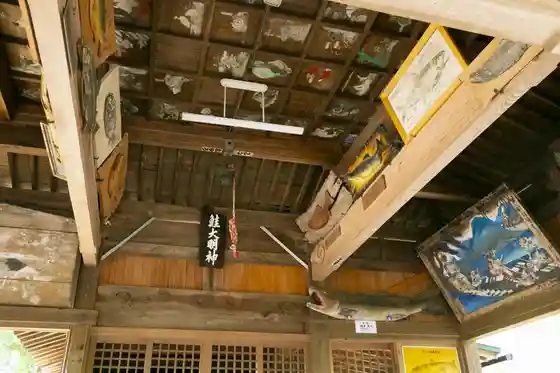
Hokuto Miya
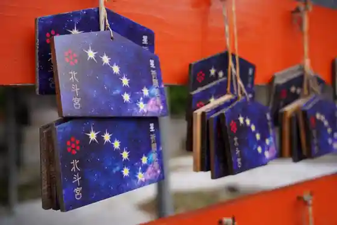
Kosho Yama Kyanpu Village (Asobinin no Mori)
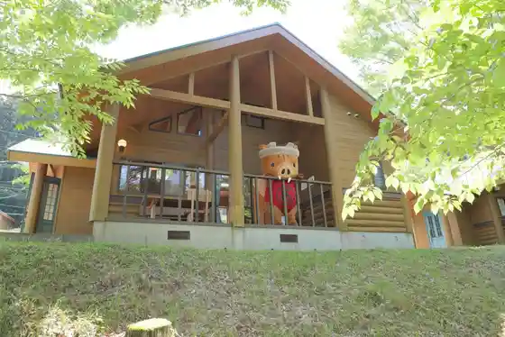
Osumi Castle Ruins (Masu Tomi Castle Ruins) (Kaho Masu Fujo Nature Park)
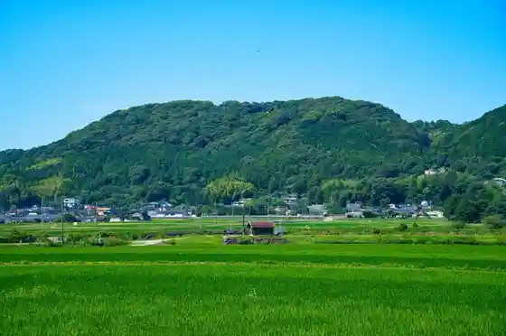
Roadside Station Usui
Kama Umebayashi Park
Yamada Manju Honpo
Kahho Uma Ko Byo
Kama Usui Heiwa Kinen Kan
Kama Usui Kyodo Kan
Mori no Naka De Hyugge Experience
sleepy cafe nico Campground
Torekkingu to Shawakuraimingu Experience
Oki Shutsu Burial Mound
Kan Hokuto Shuzo
Furusato Koryu Kan Natsuki Baths
Ite Hiki Shrine (Kama)